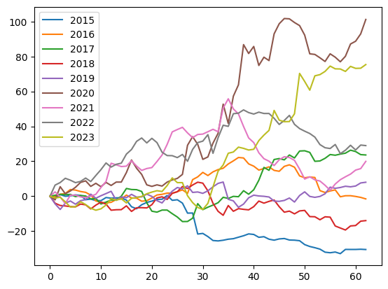
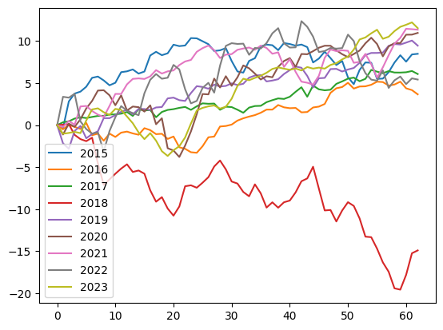
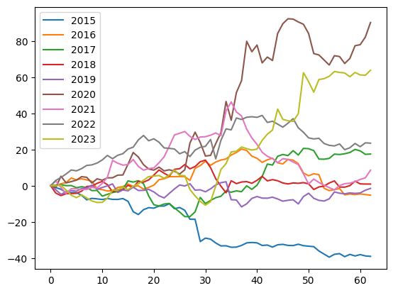

Macy’s stock seasonality#
Background#
I noticed that in the last few years, Macy’s stock has been growing around the Thanksgiving season, which aligns with makes sense, since that’s where Americans buy their presents. I wanted to do a little more math than just eye-balling the chart. Below is an export from Jupyter Notebook that I used to analyze daily stock prices for Macy’s in the range from October to December from 2015 to 2023.
Imports & Constants#
import pandas
import matplotlib.pyplot as plt
# Inclusive range for dicing
YEARS = (2015, 2023)
MONTHS = (10, 12)
Download S&P 500 stock prices history as a CSV and parse the date#
# https://www.nasdaq.com/market-activity/index/spx/historical?page=102&rows_per_page=25&timeline=y10
spx = pandas.read_csv('60-SPX.csv')
spx = spx.reindex(index=spx.index[::-1])
spx = spx.reset_index(drop=True)
del spx['Open']
del spx['Close/Last']
spx['Year'] = spx['Date'].str.split('/', expand=True)[2].astype(int)
spx['Month'] = spx['Date'].str.split('/', expand=True)[0].astype(int)
spx['Day'] = spx['Date'].str.split('/', expand=True)[1].astype(int)
spx
| Date | High | Low | Year | Month | Day | |
|---|---|---|---|---|---|---|
| 0 | 08/26/2014 | 2005.04 | 1998.59 | 2014 | 8 | 26 |
| 1 | 08/27/2014 | 2002.14 | 1996.20 | 2014 | 8 | 27 |
| 2 | 08/28/2014 | 1998.55 | 1990.52 | 2014 | 8 | 28 |
| 3 | 08/29/2014 | 2003.38 | 1994.65 | 2014 | 8 | 29 |
| 4 | 09/01/2014 | 0.00 | 0.00 | 2014 | 9 | 1 |
| ... | ... | ... | ... | ... | ... | ... |
| 2523 | 08/19/2024 | 5608.30 | 5550.74 | 2024 | 8 | 19 |
| 2524 | 08/20/2024 | 5620.51 | 5585.50 | 2024 | 8 | 20 |
| 2525 | 08/21/2024 | 5632.68 | 5591.57 | 2024 | 8 | 21 |
| 2526 | 08/22/2024 | 5643.22 | 5560.95 | 2024 | 8 | 22 |
| 2527 | 08/23/2024 | 5641.82 | 5585.16 | 2024 | 8 | 23 |
2528 rows × 6 columns
Download the target stock (M) prices history and parse the date#
# https://finance.yahoo.com/quote/M/history/
prices = pandas.read_csv('60-M.csv')
del prices['Open']
del prices['Close']
del prices['Adj Close']
del prices['Volume']
prices['Year'] = prices['Date'].str.split('-', expand=True)[0].astype(int)
prices['Month'] = prices['Date'].str.split('-', expand=True)[1].astype(int)
prices['Day'] = prices['Date'].str.split('-', expand=True)[2].astype(int)
Merge the two datasets using date#
Discard any rows with incomplete data
df = pandas.merge(spx, prices, on=['Year', 'Month', 'Day'], how='inner', suffixes=('Spx', 'Stock'))
df = df[(YEARS[0] <= df.Year) & (df.Year <= YEARS[1]) & (MONTHS[0] <= df.Month) & (df.Month <= MONTHS[1])]
df['didx'] = [
d
for year in range(YEARS[0], YEARS[1] + 1)
for d in range((df.Year == year).sum())
]
df.describe()
| HighSpx | LowSpx | Year | Month | Day | HighStock | LowStock | didx | |
|---|---|---|---|---|---|---|---|---|
| count | 571.000000 | 571.000000 | 571.000000 | 571.000000 | 571.000000 | 571.000000 | 571.000000 | 571.000000 |
| mean | 3249.744991 | 3215.057180 | 2018.998249 | 10.984238 | 15.562172 | 25.290193 | 24.382172 | 31.224168 |
| std | 899.323476 | 888.901796 | 2.582328 | 0.821699 | 8.823070 | 11.689632 | 11.410891 | 18.331992 |
| min | 1927.210000 | 1893.700000 | 2015.000000 | 10.000000 | 1.000000 | 5.990000 | 5.570000 | 0.000000 |
| 25% | 2556.490000 | 2543.895000 | 2017.000000 | 10.000000 | 8.000000 | 15.915000 | 15.395000 | 15.000000 |
| 50% | 3098.200000 | 3083.260000 | 2019.000000 | 11.000000 | 15.000000 | 23.059999 | 22.040001 | 31.000000 |
| 75% | 3981.490000 | 3935.905000 | 2021.000000 | 12.000000 | 23.000000 | 35.070002 | 33.399999 | 47.000000 |
| max | 4808.930000 | 4780.980000 | 2023.000000 | 12.000000 | 31.000000 | 52.480000 | 51.209999 | 63.000000 |
Square up the data#
We want to plot several years on the same chart, so let’s trim the excess. For all the covered years find the smallest last day index.
years = list(range(min(df.Year), max(df.Year) + 1))
max_didx = min(max(df[df.Year==year].didx) for year in years)
min_didx = max(min(df[df.Year==year].didx) for year in years)
didxs = list(range(min_didx, max_didx + 1))
Plot#
The stock price deviations for the selected months range over the selected years.
The S&P index price for the same dates.
Stock price corrected to S&P index.
Note that we plot percentage changes of the stock from the first day of the season. On day one all prices are at 0%, and then for each year they deviate.
def convert_to_season(df, y, years, didxs):
base = dict(zip(df.Year[df.didx==0], y[df.didx==0]))
return pandas.DataFrame(
[
[
(y[(df.Year==year) & (df.didx==didx)].iloc[0] - base[year]) * 100 / base[year]
for year in years
]
for didx in didxs
],
columns=map(str, years)
)
stock_seasons = convert_to_season(df, df.LowStock, years, didxs)
spx_seasons = convert_to_season(df, df.LowSpx, years, didxs)
stock_seasons.plot()
spx_seasons.plot()
(stock_seasons - spx_seasons).plot();


